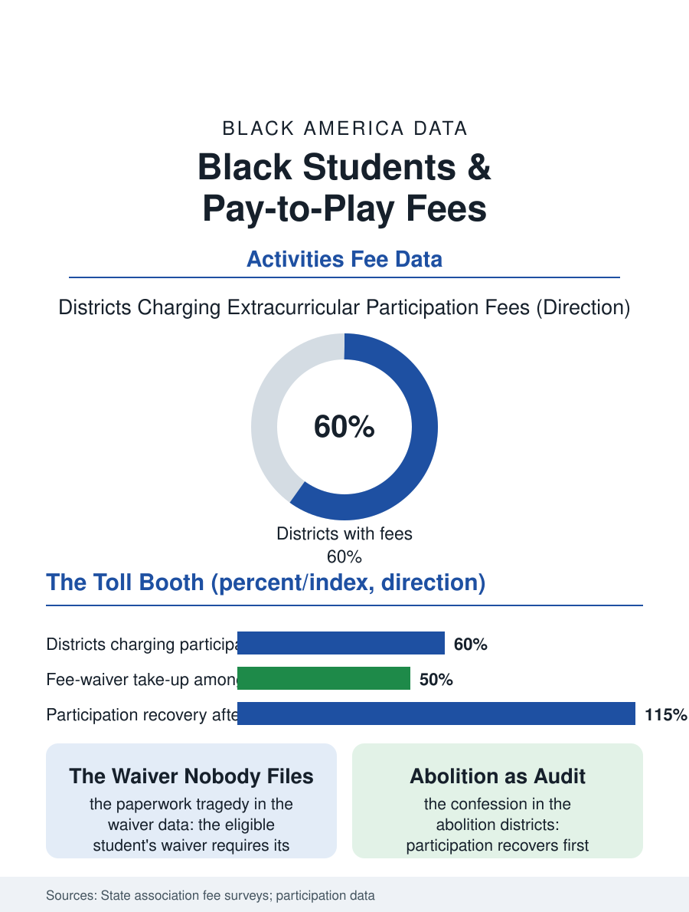

Black Education
The Toll Booth: Black Students and Pay-to-Play
The tryout's first round moved to the family's budget meeting, and abolishing the fee recovers the roster's margin first. The pay-to-play file.

Pay-to-play is the quiet toll booth the school sports and activities renaissance built: as district budgets withdrew from the extracurricular budget lines, the participation fee, the activity charge, and the equipment expectation migrated to the family's wallet, and the participation data record the resulting distribution with the fee map's precision. This article reads the pay-to-play file.
The Fee's Arrival
The fee's spread is a budget history: the post-recession contractions and the tax limitation regimes converted the extracurricular from the school's offering to the family's purchase in district after district, the athletic participation fee running from the nominal to the several hundred dollars per sport per season in the state association surveys, the band's instrument and the theater's costume and the club's travel adding their tolls beside the official one. The waiver file is the equity instrument on paper: the free lunch student's fee waived in most districts' policy, and the waiver's take-up data are the file's small tragedy, the application separate from the lunch application's automaticity in too many districts, the stigma the adolescents price above the fee itself, the coach's discretionary fund and the booster's quiet scholarship filling the gap in the pattern of the informal systems this atlas records wherever the formal one's paperwork defeats its purpose. The participation data then read the fee map back: the sports participation rates by school poverty in the national surveys diverge across exactly the decades of the fee's spread, the affluent school's roster deepening its three-sport athletes while the high-fee, high-poverty district's roster thins to the single-season survivor. The uniform and the warm-up suit deserve their sentence in the toll's accounting, the required kit's cost arriving with the roster's announcement as the fee's unlisted second installment, and the programs that learned to stock the closet, the alumni's returned gear laundered and reissued without ceremony, solved in the locker room what the policy's waiver could not solve on paper, the dignity of the solution being precisely its invisibility.
The Activities' Whole Toll
The official fee is the toll's visible portion: the travel team's dues in the club sports economy, the private coaching the roster's competition now assumes, the equipment's upgrade cycle, compose the real price of the modern school athlete's career in the youth sports file's accounting, a price that has converted the school team from the talent's great equalizer, the one arena where the community's child and the suburb's met on the school's equipment, into the club system's feeder, its roster pre-selected by the family's youth sports investment years before the school's tryout. The arts and academic activities file the same toll in their registers, the debate file's travel and the robotics file's kit and the band file's instrument composing the enrichment's true price list, each line a filter the participation data can price. The districts that abolished the fees or folded them into the general fund under the equity audits constitute the file's policy evidence: participation recovering in the abolished districts in the seasons after, at the roster's Black and low-income margin first, the fee's incidence confessed by its removal's effect.
The Tryout's New First Round
The pay-to-play file closes on the tryout's transformation, because the fee moved the tryout's first round from the field to the family's budget meeting, where it is held in September without the coach's knowledge and with the roster's consequences, a round the talented poor child loses in silence, the absence unexplained in any record the equity audit can subpoena. The file's remedies are the abolition's evidence and the automatic waiver's: the fee funded by the district as the program's cost, the waiver riding the lunch data's existing eligibility without the second application, the booster equity funds formalized rather than whispered. The association surveys count the fees' schedule each year, rising with the budgets' pressure. The file's last entry is the roster's margin, the last three names the tryout keeps and the three it loses to the invoice no one sent the coach, in the sport the school still calls open to all, a description the fee schedule has been quietly amending, per season, per family, in the plainest print the district publishes. The closet, in the abolition districts, is now simply part of the program.
More in Black Education
Black Educational Attainment: High School Parity, the College Gap
About 89 percent of Black adults hold a high school diploma and one in four holds a bachelor's degree or higher — the attainment ladder, the college completion gap, and the generational trend.
Historically Black Colleges and Universities: Enrollment and Degrees
More than 100 HBCUs enroll roughly 290,000 students and award about one in six Black bachelor's degrees — an outsized share from a small sector. The federal education data.
Black College Enrollment: 2.4 Million Students
About 2.4 million Black students are enrolled in American colleges — nearly two-thirds of them women. The NCES enrollment data by sector, level, and trend.
Source: National Federation of State High School Associations and state fee surveys; youth sports participation research.